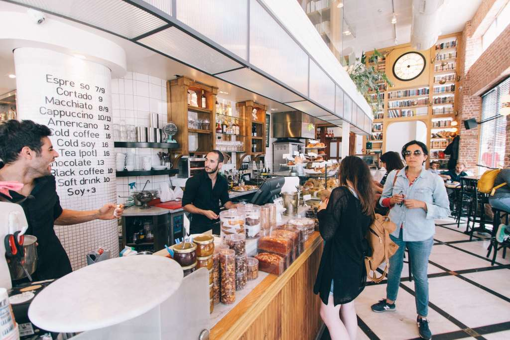

「如果有機會開一家店，不必每天早上趕著上班打卡，也不會在下班前臨時收到主管的開會通知，那該有多好呢？」、
「假設可以自己打造一間佈置優雅的咖啡店，如此一來，每天工作時不但可以被濃濃的咖啡香環繞，還能整日享受愜
意的氛圍、聆聽輕鬆的音樂，讓人在擁抱工作的同時還得以熱愛生活，這樣的人生應該會更完美…」
喝咖啡是浪漫 開咖啡店則是現實
近年來，隨著咖啡文化的普及以及咖啡消費人口的增加，使得相關市場有著快速且顯著的
成長，再加上開一家咖啡店的創業門檻相對較低，因而有越多越多的年輕人或上班族紛紛
做起咖啡夢、將咖啡店視為考慮創業時的首選，進而也使得大小不一的各式咖啡館在街道
巷弄中林立且密度大幅攀升。
根據統計，咖啡店在台灣不僅一直是熱門的創業項目之一，擁有一家咖啡店的美麗憧憬更曾經
出現在超過6成上班族的腦海當中、甚至是許多人一輩子的夢想。然而，要經營一家店真的有這
麼容易嗎？喜歡喝咖啡跟當咖啡店老闆，這兩者之間真的能輕鬆跨越且取得平衡嗎？
對此，具有多年豐富咖啡店輔導經驗的顧問業者表示，「喝咖啡是幸福的、享受咖啡是浪漫的，但
是經營咖啡店卻一點也不是這麼一回事」，姑且先不說咖啡店主每天必須重覆進行沖泡咖啡、煮咖
啡、清洗杯盤、整理器具…等看似瑣碎但卻不得不做的日常雜事，在財務方面，光是採購機器設備
就得花費上百人事薪水…等營運支出則同樣是要納入考量的必萬元，而後續的房屋租金及要成本，
更不用說如果想把店內氣氛打造得較有質感或是提供有別於競爭對手的環境或服務，那麼就得再額
外投入更多資金和心力去經營。有鑑於此，專家建議當你腦中開始浮現開咖啡店的夢想時，一定要
謹慎地經由充分且完整的評估，千萬不要貿然投入資金開店，因為你很快便會發現做為咖啡店經營
者的體驗遠遠不像咖消費者般單純美好，所須承受的壓力和煩惱甚至會比上班族多上好幾倍。
準備開店前 計劃、資金、心態缺一不可

資深的咖啡店業者分析，台灣許多咖啡店失敗的原因不外乎是因為主事者只抱持著「試試看」的心態
在創業，而未在事前擬定清楚且明確的創業計劃並確實執行。舉例來說，在準備開店前不僅要對挑豆、
烘豆、沖煮、調味、拉花…等專業咖啡知識具備一定程度的了解，最好還要針對門市選址、區域客群、
裝潢擺設…等所有可能影響營運模式的背景資料進行全面性的市場調研，進而推出市場需要、而非只是
老闆想要的產品，更重要的，是要準備好完善的資金規劃及充足的財務資金，才能確保一家店有能力渡
過初期虧損階段且支撐下去。
其次，除了外在條件的準備之外，創業者最好也要讓自己的心態有機會進行一番沈澱，並且在過程當中
時經由反思以便調整；有不少創業教戰書籍便指出，創業者在開店前可以用「6W2H」的方式思考自己為
什麼要開咖啡店、打算何時開店、店要開在什麼位置、咖啡打算賣給誰、將由誰來經營這家咖啡店、準
備花多少錢來開店、打算如何經營這家咖啡店…等。與此同時，還必須在開店前做好最壞的打算並具備
好最堅持的信念，因為當熱情消褪，夢想開始面臨顧客是否上門等現實壓力時，創業者的心態將成為支
持一家店繼續走下去的重要關鍵。
咖啡，不僅是為人們帶來「小確幸」的一大要素，更讓不少人夢想著藉此一圓創業夢想。然而，追求夢
想絕非用來逃避現實，相反地，在築夢之前必須要踏實才可以盡可能提高成功的機率，避免淪於失敗慘
賠的下場。如果你也擁有咖啡夢，別忘了在開店之前先仔細思考並了解現實，倘若確定未來的確想走上
這條路，那麼不妨就讓自己勇於實碊、築夢踏實吧！